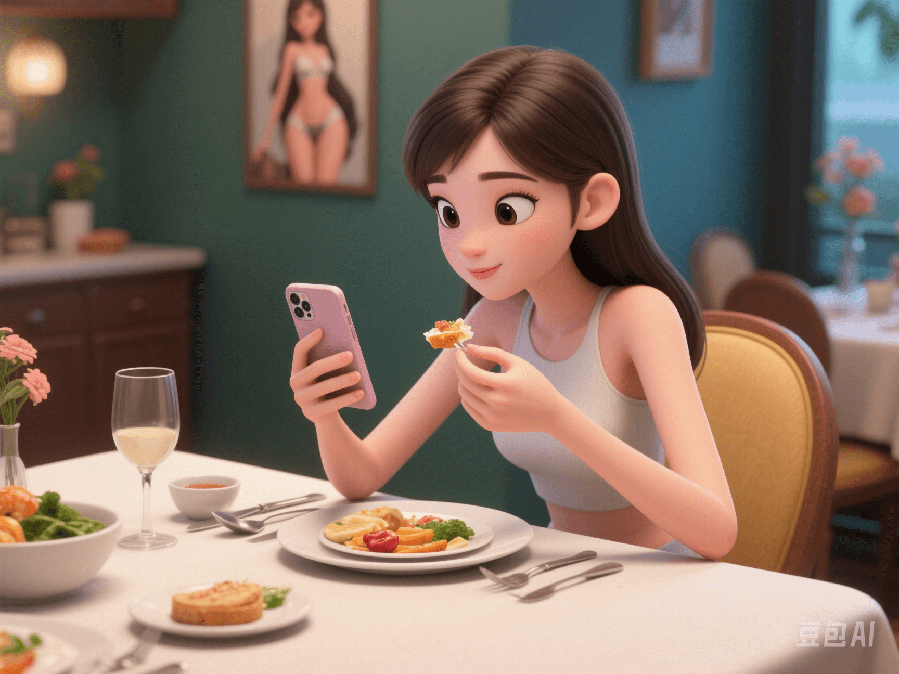

Body Image and Eating Disorders in the Age of AI
PeaceLove.Top Insights :2025-04-12
Today, let's talk about a silent anxiety that makes countless people secretly compete and lies behind selfies - body image and eating disorders 🍽️🪞
📉 Appearance Anxiety 2.0: The 'Perfect Trap' in the Age of AI Retouching
In the past, magazine covers and runway models created the 'ideal body'. Now, AI retouching and social media filters have made it normal for 'ordinary people to look like P - edited Barbie dolls or fitness models'.
🔍 Common phenomena:
- The more short - videos you watch, the more you wonder, 'Is there something wrong with my body?'
- You don't even want to look at your selfies without filters.
- You're afraid to eat because you're worried that 'even a slightly rounder face will be noticed'.
Research indicates: AI beauty algorithms have strengthened the aesthetic standard of 'unified beauty', intensifying people's demands for weight, facial shape, and skin texture - especially having the greatest impact on teenagers.
📲 Hot search terms: 'AI photo - deception anxiety', 'addiction to photo retouching','selfie - without - makeup phobia'
☠️ Extreme 'Health': The Tragedy of Fitness Bloggers' Diets
You may have seen hot searches like these:
- 'A fitness influencer died suddenly due to an extremely low - fat diet and excessive exercise.'
- 'Eating only chicken breast and protein powder all day and still saying, "It's all worth it for my body."'
Under the dual misguidance of 'thin is justice' and 'fitness is self - discipline', eating disorders have taken on the guise of a 'lifestyle', such as:
- Extremely restricting calorie intake
- Compulsive intermittent fasting (excessive intermittent fasting)
- Continuous 'clean eating' (only eating 'pure' sugar - free and fat - free foods)
These methods are essentially an extension of the desire for control and a compensation for anxiety.
🚨 What are Eating Disorders?
Eating disorders are mental illnesses, not 'failed weight - loss attempts':
| Type | Characteristics |
|---|---|
| Anorexia Nervosa | Extreme dieting, severely low body weight, and a morbid fear of being fat |
| Bulimia Nervosa | Binge - eating followed by compensatory behaviors such as vomiting or using laxatives |
| Binge - Eating Disorder (BED) | Uncontrollable eating without purging behaviors |
These disorders can lead to hair loss, endocrine disorders, osteoporosis, arrhythmia, and even sudden death.
🌱 Solution 1: #Intuitive Eating
A new way of thinking to reconcile with your body:
💡 Core concept: Don't diet, don't label foods as good or bad, and learn to listen to your body's signals. Eat what you really want and need. Intuitive eating advocates:
- Eat when you're hungry and stop when you're full
- Reconnect pleasure with eating
- Stop the self - evaluation logic of 'weight = value'
It doesn't emphasize body control but body respect.
🫂 Solution 2: #Anorexia Recovery Community
Many people are bravely sharing their recovery journeys on social platforms:
- "I stopped counting every calorie."
- "I didn't cry after eating ice cream. I've really improved."
- "I went out in loose clothes today without hiding my belly."
These real voices are awakening more people: Your body is not your enemy, and there's not just one way to be beautiful.
✅ How to Help Yourself or Others?
- 🔹 Be vigilant against the illusion that 'controlling your diet = controlling your life'
- 🔹 Pay more attention to your body's functions rather than its appearance
- 🔹 Question the perfect bodies on social media
- 🔹 If you have a tendency towards an eating disorder, seek psychological counseling or the help of a nutritionist as early as possible
- 🔹 Don't use 'eating less' or 'being thin' as a source of pride
💬 Final Gentle Reminder:
Your body is not a display item or a battlefield. Not all'self - discipline' is healthy, and not all 'thinness' is worthy of envy. You deserve to be loved - no matter how much you weigh ❤️